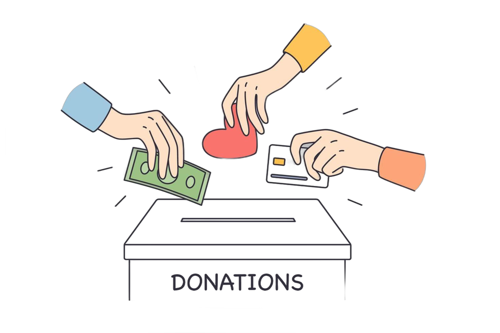

Overview
The Children's Hospital
Romania's first pediatric oncology hospital through an unprecedented effort driven by donations. It includes advanced operating rooms, intensive care units, and specialized oncology wards, as well as spaces designed to reduce stress for children and their families.
Bright colors, natural light, and family-friendly areas contrast sharply with the outdated, overcrowded facilities that previously defined pediatric care in Romania.
The hospital has been operational since April 2024, and in it's first year, over 3.500 children have already received treatment there.
Statistics
- Over 53.000.000€ raised from 350.000 individuals
- 3.500 children treated at the new hospital in the first year alone
- 17 tons of protective equipment shipped during the COVID pandemic
- Over 4.000 surgeries supported by donations
Ongoing
Dăruiește Viață is continuing the development of the Pediatric Medical Campus at Marie Curie Hospital in Bucharest. After completing Romania's first new pediatric oncology hospital in decades, the association is now working on expanding the campus with research, training, and family support facilities.
The organization is also modernizing hospitals across Romania by renovating departments and providing advanced medical equipment. Current projects focus on improving treatment conditions for children and creating more comfortable spaces for patients and families.
Alongside construction projects, Dăruiește Viață supports healthcare access through patient guidance and medical support programs. The association also remains involved in broader healthcare initiatives aimed at improving Romania's medical system long term.
Your Part

None of this would have been possible without the help of the people. If you have the means, please consider donating to the Association. Even 10 lei helps!
Donate